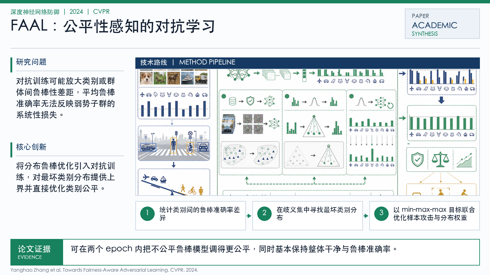

Problem
解决的问题
对抗训练可能放大类别或群体间鲁棒性差距，平均鲁棒准确率无法反映弱势子群的系统性损失。
Defense on DNNs · 2024 · CVPR
Towards Fairness-Aware Adversarial Learning
Problem
对抗训练可能放大类别或群体间鲁棒性差距，平均鲁棒准确率无法反映弱势子群的系统性损失。
Value
可在两个 epoch 内把不公平鲁棒模型调得更公平，同时基本保持整体干净与鲁棒准确率。
Paper-grounded Academic Summary
该代表页依据原文摘要、贡献段与方法图注生成。方法视觉由 ImageGen 按论文证据逐篇绘制，中文研究问题、技术路线、创新点与实验结论采用确定性排版，以保证内容与字符准确。
打开原文 PDF
Technical Route
Innovation